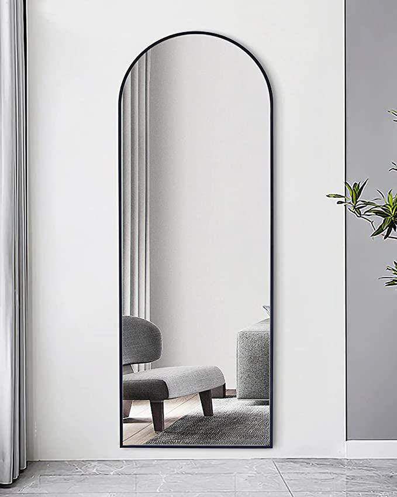

About Our Mirrors
At Tensorgrid Ltd, we supply high-quality mirrors designed for durability, clarity, and long-lasting performance. Our mirrors are manufactured using advanced coating technologies to provide excellent reflection, corrosion resistance, and aesthetic appeal.
They are suitable for both interior and decorative applications in residential, commercial, and hospitality spaces.
Mirror Specifications
Applications
- Residential interiors
- Bathrooms and vanities
- Gyms and fitness studios
- Salons and barbershops
- Hotels and commercial spaces
- Decorative wall features
Aluminium Mirrors
Aluminium mirrors are produced by coating glass with a layer of aluminium, followed by protective coatings.
- Cost-effective
- Good reflection quality
- Lightweight
- Suitable for general indoor use
Applications: Furniture, Wardrobes, Interior decor
Silver Mirrors
Silver mirrors are manufactured using a silver coating, providing superior clarity and reflectivity compared to aluminium mirrors.
- High reflectivity and clarity
- Smooth, distortion-free reflection
- More durable with double coating protection
- Better resistance to corrosion
Applications: Bathrooms, Decorative walls, Gyms and studios, Commercial interiors
Double Coated Mirrors
Double coated mirrors have an additional protective layer applied over the reflective coating to improve durability and resistance to moisture and corrosion.
- Enhanced lifespan
- Improved resistance to humidity
- Reduced risk of black edge formation
- Suitable for demanding environments
Applications: Bathrooms, High-humidity areas, Premium interior installations
Edge Finishes
Polished Edge Mirrors
Polished edges are smooth and shiny, giving the mirror a clean and refined appearance.
- Smooth, glossy finish
- Safe to handle
- Modern look
Applications: Wall-mounted mirrors, Furniture, Bathrooms
Beveled Edge Mirrors
Beveled mirrors have edges cut and polished at an angle, creating a decorative frame-like effect.
- Elegant and decorative finish
- Adds depth and style
- Premium appearance
Applications: Decorative wall mirrors, Living spaces, Hotels and luxury interiors
LED Mirrors
LED mirrors are modern mirrors integrated with built-in lighting for enhanced functionality and aesthetics.
- Built-in LED lighting
- Energy efficient
- Provides clear illumination for grooming
- Stylish and contemporary design
Applications: Bathrooms, Dressing areas, Salons and barbershops, Hotels and modern homes